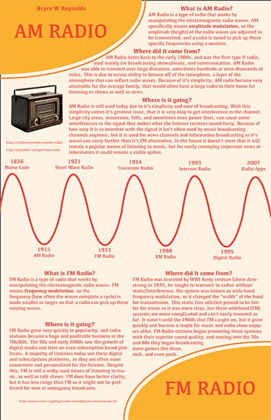

Bryce Reynolds's Infographic Project |
||
| Home 🏠 Print Project 🖨 Photo Project 📸 Infographic Project 📰 Video Project 🎬 | ||
|  |
For the infographic project we were tasked to make an infographic about a communication technology. Due to my interest in music and physics, I chose to make mine about AM and FM Radio. Using Adobe InDesign, I tried to go with a retro color scheme and styling. I also made my timeline a sine wave to represent the type of waves that are modulated for radio applications. I learned quite a lot about AM and FM radio. AM is amplitude modulation, so it changes the height of the wave being transmitted, that a radio is then tuned to pick up/receive. FM is frequency modulation, so the speed of the wave is changed and the radio is tuned respectively to pick up the wave. |
|
| Home 🏠 Print Project 🖨 Photo Project 📸 Infographic Project 📰 Video Project 🎬 | ||
|
© 2024 Bryce Reynolds |
||